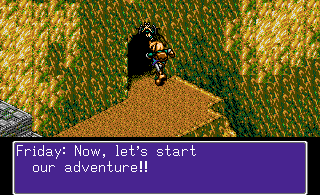

GAMUL DATE 312. Что бы это могло значить? Скорей всего, это дата - триста двенадцатый год. А что такое GAMUL? Даже для меня это до сих пор остаётся загадкой. Если же обратиться к датам нашего мира, то игра вышла в свет 30 октября 1992 года, из под крыла небезызвестной компании Climax Entertainment.
События игры получают своё начало в развалинах древнего города Jypta. Главный герой игры, лесной эльф по имени Найджел, исследует это место в поисках чем бы поживиться. Вором Найджела не назовёшь, но сюда он пришёл, чтобы забрать всё что плохо лежит. Найджел является охотником за сокровищами. Продолжение сюжета читать здесь...
По прибытии на остров, Найджел спрыгивает с птицы на землю, и после непродолжительного разговора, Фрайди говорит фразу: "Now, let's start our adventure!!". И это вполне заслуженно. Играющего ждёт интересное путешествие по острову, полному различных монстров и опасностей!
Вам предстоит побывать не в одном подземельи и не в одном городе. Интригующая история о спасении принцессы, о предательстве и о поиске сокровищ! Несколько вариантов экипировки, каждый со своими уникальными свойствами. И даже целых три, но зато каких сайд-квеста!
Потрясающая музыка от Мотоаки Такэноучи (Motoaki Takenouchi), которая до сих пор играет в моём плейлисте, дополняет эту прекрасную игру, которую я не перестаю любить вот уже больше десяти лет! И если хотя бы одному человеку я помогу решиться на то, чтобы дать этой игре шанс, то значит всё это было не напрасно...